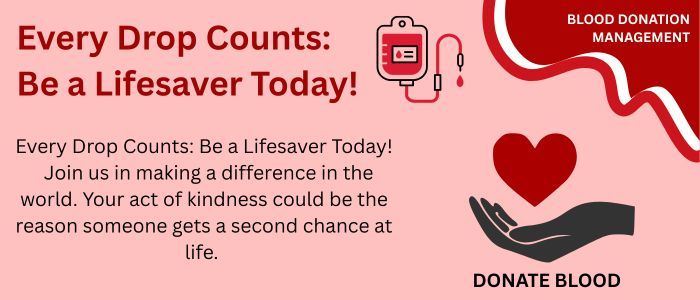

In medical emergencies, timely blood availability can save lives. This platform helps connect blood donors with people in need.

Blood donation is a life-saving service. Many patients suffer because blood is not available at the right time. An organized donor system can reduce this problem.